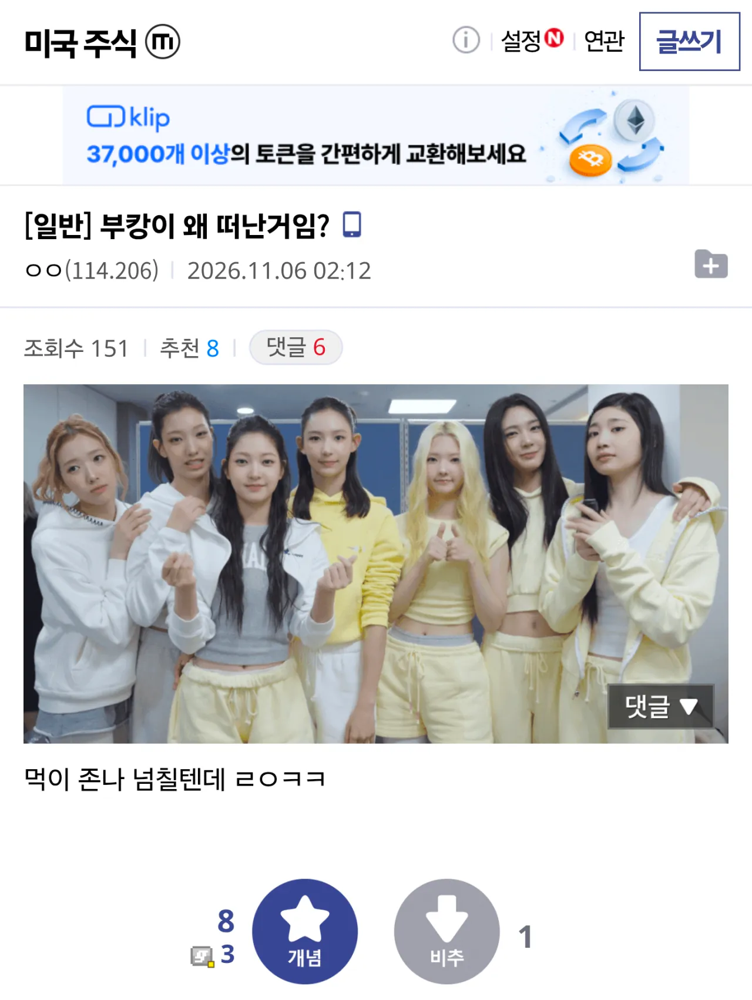
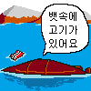

82 · 13 · 11 시간 전 · 원문

ㄹㅇㅋㅋ
수집 당시 댓글 13개
케로로중사 · 13 시간 전
거긴 수온 높아서 괜찮아
스테이골드 · 13 시간 전
원군 부르러 잠시 떠난거 아니었나 반지의 제왕 2부 간달프처럼 언젠가 돌아올것
1232121334 · 13 시간 전
ㅋㅋㅋㅋㅋㅋㅋㅋㅋㅋㅋ
환경파괴범캐리어 · 13 시간 전

품절남 · 12 시간 전
ㅋㅋㅋㅋㅋㅋㅋㅋㅋㅋㅋㅋㅋ
유아학교 · 12 시간 전
자기합리화 · 12 시간 전
이미 물린거라 맛없대
주식졷밥 · 11 시간 전
김공장 · 11 시간 전
부캉이랑 주식물린사람이랑 맞짱뜨면 부캉이가 진다..
삼겹살에비빔면 · 11 시간 전
ㅋㅋㅋㅋㅋㅋㅋㅋㅋㅋㅋㅋ
으으으으으으그 · 9 시간 전
ㅋㅋㅋㅋㅋㅋ
커뮤질도못하는아싸 · 9 시간 전
한둘 빠져야 먹이지 이 정도면 수온이 올라서 상어도 익겠다
월배당100목표 · 29 분 전
뭐지 하다가미국주식 갤러리였네

거긴 수온 높아서 괜찮아